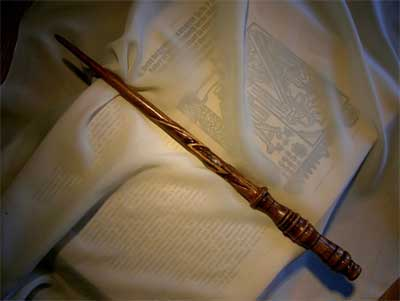
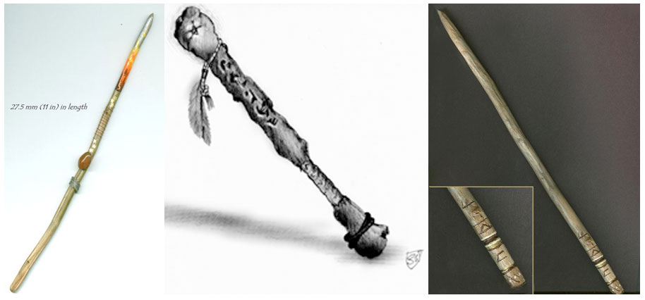

Le bacchette magiche solitamente sono lunghe circa 30 cm. ed alquanto sottili. Il loro peso nella normalità dei casi (a seconda del materiale utilizzato) non supera la singola libbra. Possono essere di metallo, di legno, di avorio o di osso. Solitamente con la punta incastonata di quarzo, metalli, cristallo o pietra. Le bacchette magiche sono fragili e tendono a rompersi facilmente (effettuano i tiri salvezza come se fossero legno con una penalità di -1).
Le magie lanciate dalle bacchette magiche si considera lanciata da un utente di magia del 6° livello di esperienza. L'energia magica delle bacchette è contenuta in cariche magiche che sono consumate al lancio delle magie. Solitamente le bacchette possono essere ricaricate a meno che non siano state utilizzate tutte le cariche.
Quando una bacchetta è creata normalmente possiede 1d20 + 80 cariche. Molto raramente le bacchette magiche possono contenere più di un massimale di 100 cariche.
Le bacchette magiche sono solitamente attivate con l'utilizzo di una speciale parola magica che cambia da oggetto magico ad oggetti magico. Senza la conoscenza della parola magica non è possibile utilizzarle.
Le bacchette magiche sono oggetti magici appositamente creati per immagazzinare un numero relativamente alto di cariche magiche (e quindi di utilizzi) ad un potenziale magico di livello medio-basso. Per tale motivo è oltremodo difficile creare bacchette magiche che siano in grado di produrre effetti magici superiori a quelli tipici delle magie di 3° livello di potere. Inoltre, le bacchette magiche sono oggetti in grado di convogliare quasi esclusivamente l'energia magica rilasciata dai maghi. Per tale motivo, a meno che non sia espressamente prevista un'eccezione, le bacchette magiche possono essere utilizzate solo dagli utenti di magia. Ogni singola bacchetta magica può produrre anche differenti effetti magici, in ogni caso tutti gli effetti magici devono appartenere alla medesima scuola di magia con le cui formule l'oggetto è stato caricato (in caso di evocazione gli effetti devono essere della medesima fonte elementale principale tra aria, acqua, fuoco e terra) ed è molto difficile creare bacchette in grado di produrre più di tre diversi effetti magici. Si noti, inoltre, che non è normalmente possibile caricare sulle bacchette magiche incantesimi che abbiano un casting time superiore ad 1 round né incantesimi che abbiano come raggio il tocco od un raggio pari a 0, né incantesimi che richiedano l'utilizzo di un componente materiale dal peso pari o superiore a 5 libbre.
Per
utilizzare le bacchette magiche si applicano le seguenti regole:
A)
Il fattore
di iniziativa degli incantesimi delle bacchette magiche è pari al casting time
della relative magie ma, in ogni caso, la bacchetta avrà avere un
fattore
iniziativa minimo pari a +3
(in pratica, le magie con casting time pari ad 1 ed a 2 caricate sulla bacchetta
magica saranno lanciate con un fattore iniziativa di +3).
B)
Se la magia lanciata dalla bacchetta
prevede che sia superato un tiro salvezza contro incantesimi lo stesso sarà
sostituito da un tiro salvezza contro bacchette magiche (i tiri salvezza diversi
da quelli contro incantesimi non sono, invece, modificati).
In ogni caso, indipendentemente dalla
tipologia del tiro salvezza effettuato, non si applicheranno ai tiri salvezza
imposti dalla magia lanciata con la bacchetta i modificatori dovuti alla
specializzazione del mago che la utilizza, al livello di potere della magia
lanciata ed alla differenza tra il livello di lancio della magia ed il
livello/dado vita della vittima.
C)
Come per lanciare una magia, per utilizzare la bacchetta magica occorre
mantenere concentrazione ed utilizzare componenti somatici e vocali (parola di
attivazione). Perdere la concentrazione farà abortire l'azione di utilizzo della
bacchetta e perdere le cariche utilizzate.
D)
La bacchetta magica è in grado, come le verghe, di catalizzare
l'energia magica del mago che la utilizza. Per questo motivo, lo stesso
potrà lanciare con in mano la bacchetta magica anche incantesimi che richiedano
l'utilizzo di componenti somatici. La bacchetta, però, rallenta i movimenti
somatici di lancio imponendo
una penalità di +1 al casting time
(riducibile con l'uso dei punti magia). Questa penalità non si applica alle
magie con solo componenti vocali.
E)
Rilasciare l'energia contenuta nella bacchetta magica non è un'azione
estremamente semplice. Ogni volta che il mago utilizza una bacchetta magica
dovrà tirare 1d20. Con un
risultato di 20
la bacchetta funzionerà regolarmente ma non saranno state consumate le relative
cariche. Con un risultato di 1
si verificherà uno degli eventi
previsti nella successiva tabella (tirare 1d6):
1)
Backfire
- La bacchetta rilascia il suo effetto magico centrandolo sul mago.
2)
Perdita di
energia - La
bacchetta funziona ma utilizza il doppio delle cariche necessarie ad attivare
l'effetto magico.
3)
Fallimento -
Il mago fallisce nell'uso dell'oggetto, la carica si consuma ma nessun effetto
magico si verifica.
4)
Magia
Casuale -
La bacchetta rilascia uno diverso dei suoi effetti scelto a caso tra i rimanenti
rispetto a quello selezionato dal mago, se la bacchetta è in grado di produrre
un unico effetto magico si consideri un semplice fallimento.
5)
Contraccolpo Magico -
Il mago sbaglia ad utilizzare la bacchetta magica quindi fallisce nell'uso
dell'oggetto e consuma le relative cariche senza produrre alcun effetto, inoltre costui
subisce un forte contraccolpo dovuto all'energia magica sprigionata dalla
bacchetta. Per tale motivo il mago subirà 1d6 danni da impatto e dovrà superare
un tiro salvezza contro pietrificazione per non cadere a terra (knockdown)
sul posto, inoltre, indipendentemente dal risultato del tiro salvezza, costui si
considererà incapacitato per 2d3 rounds.
6)
Sovraccarico di Energia Magica
- Il mago riesce ad utilizzare l'effetto ma sovraccarica la bacchetta di energia
magica. La bacchetta dovrà superare un
tiro salvezza pari ad 8
per non sgretolarsi nelle mani del mago distruggendosi.
Quando si ritrova una bacchetta magica si tiri un dado % per determinare la % di cariche residue, arrotondando per eccesso, che la medesima possiede. Inoltre, si tiri un dado da 12 per verificare se e quanto la bacchetta è stata ricaricata: con un risultato da 1 a 6 la bacchetta non è mai stata ricaricata; per ogni risultato superiore al 6 la bacchetta è già stata ricaricata una volta; se si tira un risultato di 12, si tiri un ulteriore dado 6; con un risultato da 1 a 3 la bacchetta sarà stata ricaricata 6 volte, con un risultato da 4 a 6 la bacchetta non può essere più ricaricata.
Nel seguente schema può sintetizzarsi il valore in punti esperienza ed in monete d'oro delle bacchette magiche. Il valore sarà calcolato in base al valore del più costoso (in termini di xp e gp) effetto magici che la bacchetta può rilasciare, gli effetti magici ulteriori saranno sommati al primo solo per il 50% del loro valore:
| LIVELLO E GRADO | VALORE IN PUNTI ESPERIENZA | VALORE IN MONETE D'ORO |
| 1° LVL - 1° Grado | 250 | 2000 |
| 1° LVL - 2° Grado | 400 | 3200 |
| 1° LVL - 3° Grado | 700 | 5600 |
| 1° LVL - 4° Grado | 800 | 6500 |
| 2° LVL - 1° Grado | 500 | 4000 |
| 2° LVL - 2° Grado | 650 | 5200 |
| 2° LVL - 3° Grado | 1300 | 10500 |
| 2° LVL - 4° Grado | 1500 | 12000 |
| 3° LVL - 1° Grado | 1000 | 8000 |
| 3° LVL - 2° Grado | 1250 | 10000 |
| 3° LVL - 3° Grado | 1750 | 14000 |
| 3° LVL - 4° Grado | 2000 | 16000 |
A
tale valore base di XP e GP saranno applicati i seguenti modificatori:
*
Se l'incantesimo caricato prevede l'utilizzo di un componente materiale che non
si consuma, uno di questi componenti è sacrificato nella produzione della
bacchetta, aggiungere il suo valore per intero.
*
Se l'incantesimo caricato prevede l'utilizzo di un componente materiale che si
consuma ad ogni lancio della magia aggiungere al costo della bacchetta il costo
di 100 dosi di detto componente materiale (50 dosi se per lanciare la magia sono
richieste 2 cariche e 33 dosi se per lanciare la magia ne sono richieste 3).
*
Se l'effetto magico prevede anche una scuola di magia secondaria si incrementi
del 20% il suo valore finale.
*
Se per produrre l'effetto magico la bacchetta necessita di 2 cariche ridurre il
costo dell'effetto del 25%.
*
Se per produrre l'effetto magico la bacchetta necessita di 3 cariche ridurre il
costo dell'effetto del 33%.
*
Se la bacchetta è in grado di sprigionare effetti magici ulteriori al primo, gli
effetti meno costosi (in base ad una valutazione effettuata dopo l'applicazione
del modificatore dovuto alle cariche richieste ma indipendentemente dal costo
del componente materiale eventualmente presente) saranno considerati solo al 50% del loro valore finale.
Esclusivamente il costo in GP (inteso come
valore medio di mercato) di una bacchetta magica dipenderà anche dalla
situazione relative alle sue cariche, si consideri il seguente schema:
Il numero di cariche residue è superiore all'80% =
ridurre il valore di
mercato del 10 %
Il numero di cariche residue è compreso tra il 60% e l' 80% =
ridurre il valore di mercato del 20 %
Il numero di cariche residue è compreso tra il 40% ed il 60% =
ridurre il valore di
mercato del 30 %
Il numero di cariche residue è compreso tra il 10% ed il 40% =
ridurre il valore di
mercato del 40 %
Il numero di cariche residue è inferiore al 10% =
ridurre il valore di
mercato del 50 %
Se la bacchetta è già stata ricaricata ridurre del 3% il suo valore finale per
ogni ricarica effettuata fino ad un massimo di -30% qualora la bacchetta sia
stata ricaricata 10 o più volte.
Per calcolare il valore di mercato di una bacchetta magica che non può essere più ricaricata ridurre del
50% il suo
valore finale dividere il risultato per 100 e moltiplicarlo per il numero di
cariche residue, aggiungere quindi 200 g.p. per il costo intrinseco della
bacchetta.

